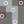

Docs for ‘QGIS testing’. Visit http://docs.qgis.org/2.14 for QGIS 2.14 docs and translations.
Interpolation Plugin¶
The Interpolation plugin can be used to generate a TIN or IDW interpolation of a point vector layer. It is very simple to handle and provides an intuitive graphical user interface for creating interpolated raster layers (see Figure_interpolation_1). The plugin requires the following parameters to be specified before running:
- Input Vector layers: Specify the input point vector layer(s) from a list of
loaded point layers. If several layers are specified, then data from all layers
is used for interpolation. Note: It is possible to insert lines or polygons as
constraints for the triangulation, by specifying either “points”, “structure
lines” or “break lines” in the Type
 combo box.
combo box. - Interpolation attribute: Select the attribute column to be used for interpolation
or enable the
 Use Z-Coordinate checkbox to use the layer’s
stored Z values.
Use Z-Coordinate checkbox to use the layer’s
stored Z values. - Interpolation Method: Select the interpolation method. This can be either ‘Triangulated Irregular Network (TIN)’ or ‘Inverse Distance Weighted (IDW)’. With the TIN method you can create a surface formed by triangles of nearest neighbor points. To do this, circumcircles around selected sample points are created and their intersections are connected to a network of non overlapping and as compact as possible triangles. The resulting surfaces are not smooth. When using the IDW method the sample points are weighted during interpolation such that the influence of one point relative to another declines with distance from the unknown point you want to create. The IDW interpolation method also has some disadvantages: the quality of the interpolation result can decrease, if the distribution of sample data points is uneven. Furthermore, maximum and minimum values in the interpolated surface can only occur at sample data points. This often results in small peaks and pits around the sample data points.
 Configure Interpolation Method: Configure the interpolation method
you have chosen. For the TIN method you can choose between Linear and Clough Toucher
(cubic) interpolation methods. You can also save the triangulation in shapefile format.
For IDW interpolation you can set the distance coefficient.
Configure Interpolation Method: Configure the interpolation method
you have chosen. For the TIN method you can choose between Linear and Clough Toucher
(cubic) interpolation methods. You can also save the triangulation in shapefile format.
For IDW interpolation you can set the distance coefficient.- Number of columns/rows: Specify the number of rows and columns for the output raster file.
- Output file: Specify a name for the output raster file.
- Add result to project to load the result into the map canvas.
Note that using lines as constraints for the interpolation the triangulation (TIN method) you can either use ‘structure lines’ or ‘break lines’. When using ‘break lines’ you produce sharp breaks in the surface while using ‘structure lines’ you produce continuous breaks. The triangulation is modified by both methods such that no edge crosses a breakline or structure line.
Figure Interpolation 1:
Interpolation Plugin
Using the plugin¶
- Start QGIS and load a point vector layer (e.g., elevp.csv).
- Load the Interpolation plugin in the Plugin Manager (see The Plugins Dialog) and click on the Raster ‣ Interpolation ‣  Interpolation menu, which appears in the QGIS menu bar. The Interpolation plugin dialog appears as shown in Figure_interpolation_1.
- Select an input layer (e.g., elevp ) and column
(e.g., ELEV) for interpolation.
- Select an interpolation method (e.g., ‘Triangulated Irregular Network (TIN)’), and specify a cell size of 5000 as well as the raster output filename (e.g., elevation_tin).
- Click [OK].
{kind=link}